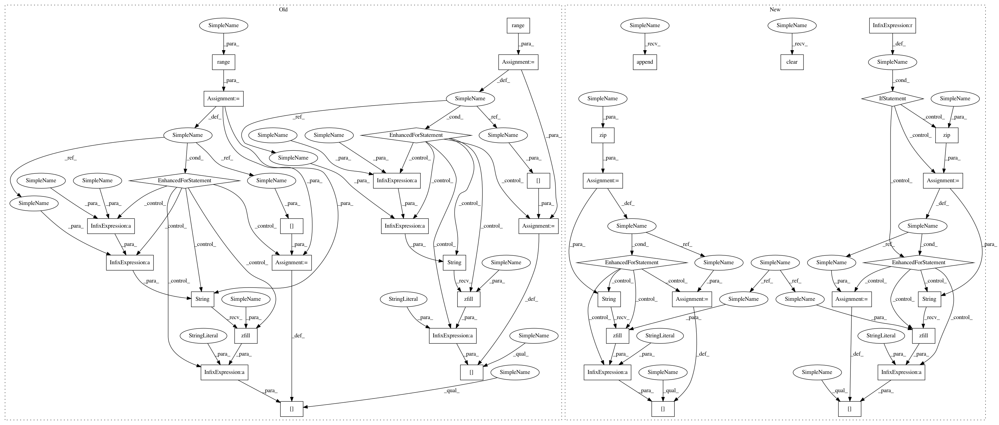

d63692e0304ae593352d509e0222f0d5befc67dc,deeplabcut/pose_estimation_tensorflow/predict_multianimal.py,,GetPoseandCostsF,#Any#Any#Any#Any#Any#Any#Any#Any#Any#,126
Before Change
inputs,
outputs,
)
for l in range(batchsize):
// pose = predict.getposeNP(frames,dlc_cfg, sess, inputs, outputs)
// PredicteData[batch_num*batchsize:(batch_num+1)*batchsize, :] = pose
PredicteData[
"frame" + str(batch_num * batchsize + l).zfill(strwidth)
] = D[l]
batch_ind = 0
batch_num += 1
else:
batch_ind += 1
else:
nframes = counter
print("Detected frames: ", nframes)
if batch_ind > 0:
// pose = predict.getposeNP(frames, dlc_cfg, sess, inputs, outputs) //process the whole batch (some frames might be from previous batch!)
// PredicteData[batch_num*batchsize:batch_num*batchsize+batch_ind, :] = pose[:batch_ind,:]
D = predict.get_batchdetectionswithcosts(
frames,
dlc_cfg,
dist_grid,
batchsize,
num_joints,
num_idchannel,
stride,
halfstride,
det_min_score,
sess,
inputs,
outputs,
c_engine=c_engine,
)
for l in range(batch_ind):
// pose = predict.getposeNP(frames,dlc_cfg, sess, inputs, outputs)
// PredicteData[batch_num*batchsize:(batch_num+1)*batchsize, :] = pose
PredicteData[
"frame" + str(batch_num * batchsize + l).zfill(strwidth)
] = D[l]
break
counter += 1
cap.close()
pbar.close()
After Change
cfg, dlc_cfg, sess, inputs, outputs, cap, nframes, batchsize, c_engine
):
Batchwise prediction of pose
strwidth = int(np.ceil(np.log10(nframes))) // width for strings
batch_ind = 0 // keeps track of which image within a batch should be written to
batch_num = 0 // keeps track of which batch you are at
if cfg["cropping"]:
cap.set_bbox(cfg["x1"], cfg["x2"], cfg["y1"], cfg["y2"])
nx, ny = cap.dimensions
frames = np.empty(
(batchsize, ny, nx, 3), dtype="ubyte"
) // this keeps all frames in a batch
pbar = tqdm(total=nframes)
counter = 0
step = max(10, int(nframes / 100))
PredicteData = {}
// initializing constants
dist_grid = predict.make_nms_grid(dlc_cfg.nmsradius)
stride, halfstride = dlc_cfg.stride, dlc_cfg.stride * 0.5
num_joints = dlc_cfg.num_joints
det_min_score = dlc_cfg.minconfidence
num_idchannel = dlc_cfg.get("num_idchannel", 0)
while cap.video.isOpened():
if counter % step == 0:
pbar.update(step)
frame = cap.read_frame(crop=cfg["cropping"])
inds = []
if frame is not None:
frames[batch_ind] = img_as_ubyte(frame)
inds.append(counter)
if batch_ind == batchsize - 1:
// PredicteData["frame"+str(counter)]=predict.get_detectionswithcosts(frame, dlc_cfg, sess, inputs, outputs, outall=False,nms_radius=dlc_cfg.nmsradius,det_min_score=dlc_cfg.minconfidence)
D = predict.get_batchdetectionswithcosts(
frames,
dlc_cfg,
dist_grid,
batchsize,
num_joints,
num_idchannel,
stride,
halfstride,
det_min_score,
sess,
inputs,
outputs,
)
for ind, data in zip(inds, D):
PredicteData["frame" + str(ind).zfill(strwidth)] = data
batch_ind = 0
inds.clear()
batch_num += 1
else:
batch_ind += 1
elif counter >= nframes:
if batch_ind > 0:
// pose = predict.getposeNP(frames, dlc_cfg, sess, inputs, outputs) //process the whole batch (some frames might be from previous batch!)
// PredicteData[batch_num*batchsize:batch_num*batchsize+batch_ind, :] = pose[:batch_ind,:]
D = predict.get_batchdetectionswithcosts(
frames,
dlc_cfg,
dist_grid,
batchsize,
num_joints,
num_idchannel,
stride,
halfstride,
det_min_score,
sess,
inputs,
outputs,
c_engine=c_engine,
)
for ind, data in zip(inds, D):
PredicteData["frame" + str(ind).zfill(strwidth)] = data
break
counter += 1
cap.close()
In pattern: SUPERPATTERN
Frequency: 3
Non-data size: 42
Instances
Project Name: AlexEMG/DeepLabCut
Commit Name: d63692e0304ae593352d509e0222f0d5befc67dc
Time: 2021-01-06
Author: 30733203+jeylau@users.noreply.github.com
File Name: deeplabcut/pose_estimation_tensorflow/predict_multianimal.py
Class Name:
Method Name: GetPoseandCostsF
Project Name: AlexEMG/DeepLabCut
Commit Name: d63692e0304ae593352d509e0222f0d5befc67dc
Time: 2021-01-06
Author: 30733203+jeylau@users.noreply.github.com
File Name: deeplabcut/pose_estimation_tensorflow/predict_multianimal.py
Class Name:
Method Name: GetPoseandCostsF
Project Name: AlexEMG/DeepLabCut
Commit Name: 4ae9541144d2d3b03675587e16cce820c4fc1942
Time: 2021-01-22
Author: alexander@deeplabcut.org
File Name: deeplabcut/pose_estimation_tensorflow/predict_multianimal.py
Class Name:
Method Name: GetPoseandCostsF
Project Name: AlexEMG/DeepLabCut
Commit Name: 9c3d9ba05502b5f553bc8abc44d08e09e1851e68
Time: 2021-02-05
Author: 30733203+jeylau@users.noreply.github.com
File Name: deeplabcut/pose_estimation_tensorflow/predict_multianimal.py
Class Name:
Method Name: GetPoseandCostsF